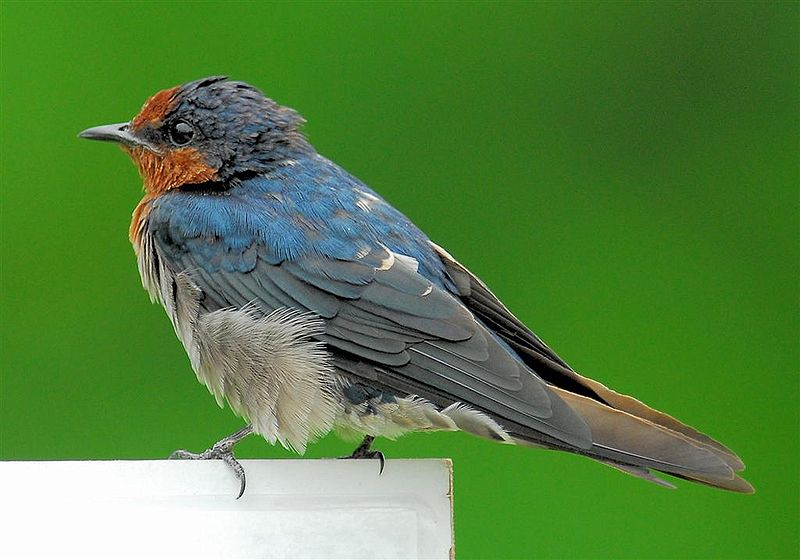
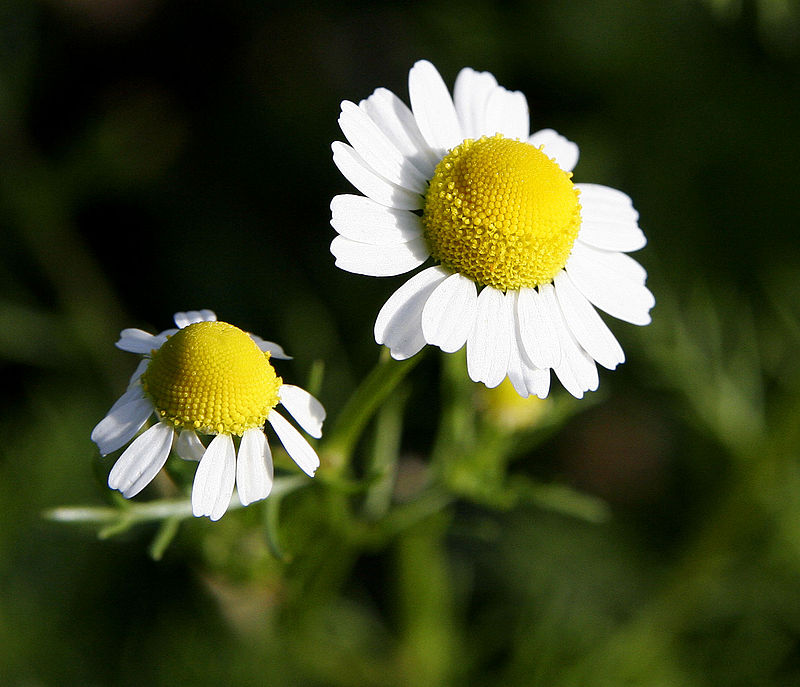
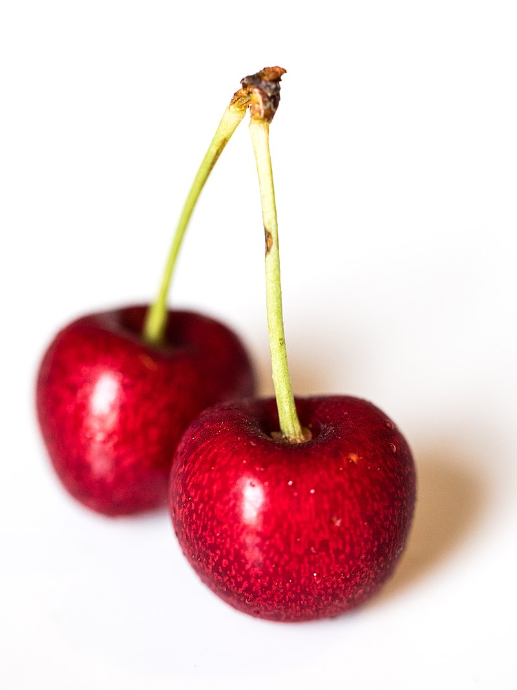
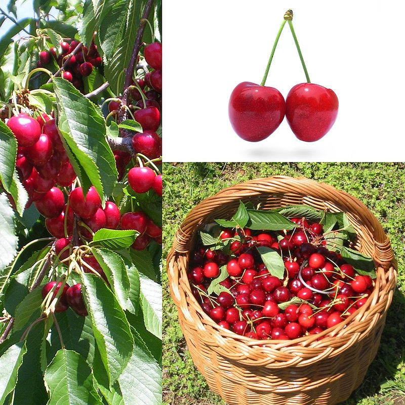
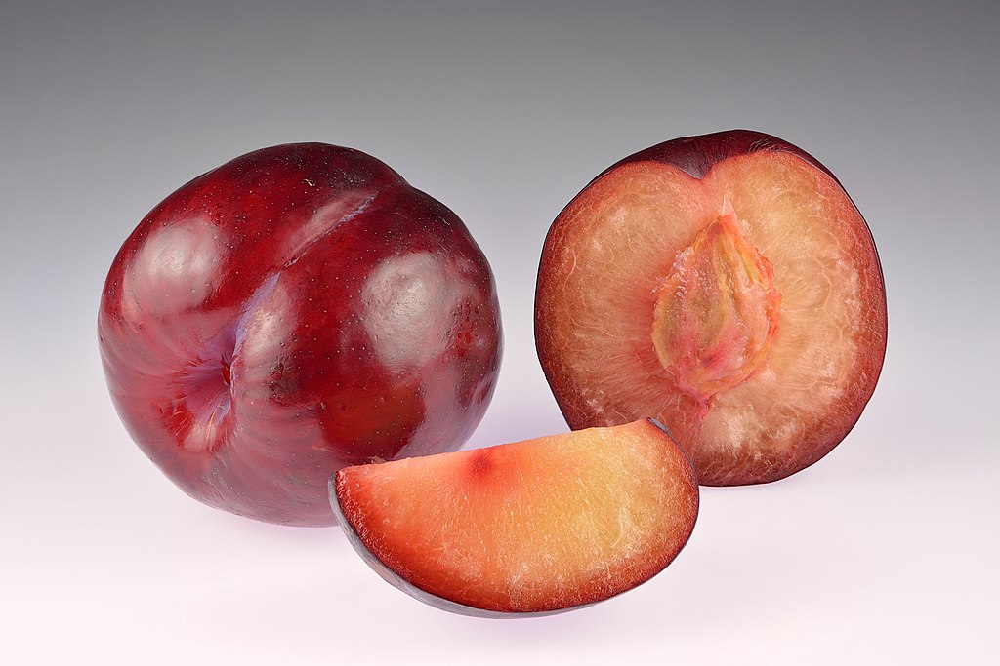

Ластівки
Ластівка (Hirundo) — рід птахів родини ластівкових (Hirundinidae). Найпоширеніший вид — ластівка сільська (Hirundo rustica).
Ластівка сільська в Україні гніздова, перелітна. Вона має довгий роздвоєний хвіст з глибоким вирізом, тонкі крила. У повітрі ця пташка здійснює запаморочливі акробатичні трюки. Ластівка має яскраве оперення — на спині блискуче пір'я, а черевце — біле. Довжина тіла 10—16 см, довжина крила 8,1—9,5 см., маса 17—27 г.
Ластівку сільську легко впізнати по яскравому, блискучому, синьо-сталевому оперенню з фіолетовим відливом і характерній формі хвоста з глибоким розрізом і довгим хвостовим пір'ям з боків. Влітку, заглянувши під дах хліва, майже завжди можна побачити приліплене до стелі характерне, схоже на чашу гніздо цієї пташки. Восени можна спостерігати за ластівками, що збираються у великі зграї перед відльотом на місця зимування її.
Ромашка
Назва ромашка запозичена з російської мови, де утворена від нині забутої назви роман. Рослину в Україні здавна називали теж роман (див. також споріднений рід роман), співзвучні назви існують і в інших слов'янських мовах (біл. рамонак, рамон, пол. rumianek, чеськ. heřmánek, словац. ruman, rumanček, серб. раменак/ramenak). Походження слов'янських назв квітки остаточно не з'ясоване: здебільшого вони виводяться від латинської видової назви anthemis romana («ромашка римська»); припускається також зв'язок з нім. Hermlan, Hermelin, Hermandel, які можуть розглядатися похідними від лат. camomilla (> armamilla). Форми з кореневим у можуть бути пояснені контамінацією з прикметником рум'яний.
Ромашкою називають також деякі інші види рослини: триреберник непахучий, маруну цинерарієлисту або далматську ромашку та інші.
Вишня
Вишня (Cerasus) — підрід рослин із підродини мигдалеві. Більшість плодів видів з цього підроду їстівні.
Вишня є одним із найпоширеніших плодів, які використовують при приготуванні окремих солодощів. Сушені вишні часто використовуються при приготуванні цукерок з алкогольними напоями всередині. У періоди кінця травня та майже всього червня, можливо ще частини липня, у Європі вишня — ягідний продукт, що вживають сирим. Черешня — один із видів з підроду вишні — вважається одним із найсмачніших видів.
Черешня
Черешня (Prunus avium) — рослина роду слива (Prunus) родини розових (Rosaceae).
Білі квіти у суцвітті. Чашолистків та пелюстків по п'яти, тичинок — багато, маточка одна. Черешня - типова перехреснозапильна культура, тому для якісного врожаю потрібно поруч садити кілька різних сортів і забезпечувати їх комахами-запилювачами: бджолами. Цвіте у квітні — травні, за сприятливих погодних умов може бути гарним медоносом для весняного розвитку бджолиних сімей. Медопродуктивність садів становить до 30 кг/га.
Плід — солодка, куляста або злегка серцеподібна чорна, жовта або червона кістянка, у дикорослих дрібніша, ніж у культурних, до 2.5 см в діаметрі. Плоди черешні мають до 17 % цукру та до 1,1 % органічних кислот. Коренева система частіш за все горизонтальна, але за сприятливих умовах можуть виникнути вертикальні корені. Цвіте черешня в кінці березня ― початку квітня, плодоносить з другої половини травня.
Слива
Сли́ва — рід плодових кісточкових рослин, включає такі види як слива домашня, вишня звичайна, персик, абрикос, мигдаль та інші. Звичайно відносять до підродини мигдалеві або сливові родини розових. Відомо декілька сотень видів сливи, поширених, головним чином, в північних помірних областям земної кулі.
Квіти звичайно білі або рожеві, з п'ятьма пелюстками і п'ятьма чашолистками. Поодинокі, або в зонтиках від двох до шести суцвіть. Фрукти всіх видів — кістянка з відносно великою кісточкою. Листя просте і звичайно ланцетоподібне, із зубцями по краях.